兩輪比稿的紀錄。所有方向都直接跑在主站首頁的真實首屏上（影片背景固定在同一幀），不是另做的 mock-up。已定案 d9 並套成預設，?book= 參數與調校頁隨定案移除，下面的截圖是當時的紀錄。
studio.css:21 讓 .header-label 和 .nav-inner>a 共用同一套排版（中文在上、英文在下、置中），CTA 的內部結構跟「最新消息」一模一樣，只多一個框。#i-check（已完成／已選取），但這顆是「去預約」。sprite 裡閒置的 #i-calendar-check 才對。--hero-line（60% 白）撐邊框，影片亮幀時幾乎消失，非文字對比 3:1 過不了。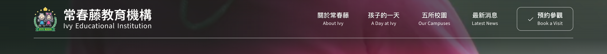
和四個導覽項同色同字重，只多一個框
邊框在亮幀上幾乎消失
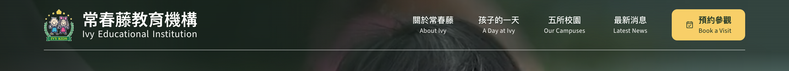
首屏、捲動後、膠囊全程同色，入口只有一種長相
暖黃是品牌色裡唯一沒被導覽與 logo 用掉的顏色
首屏多一塊高彩度色塊，安靜感會少一點
中英雙行仍在，形狀還是和導覽項同一族
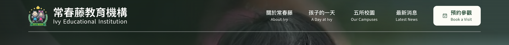
任何影片幀上都讀得到，對比最不挑背景
乾淨、不搶首屏的安靜
和白色導覽文字同色系，跳出的力道比 a 弱
捲動後仍得交回黃膠囊，兩種長相沒解決
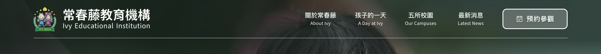
首屏維持現在的克制，改動最小
已經加到 22% 白底＋純白 2px 框＋毛玻璃，仍然跳不出來
中文單行後整顆反而變小，這條路到頂就是這樣
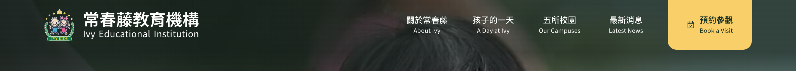
形狀徹底脫離「框起來的導覽項」，一眼是動作不是連結
可點面積最大，落點也最好瞄
首屏最搶眼的東西變成它，不是照片裡的孩子
手機沒有貼邊的位置（右邊還有漢堡），得降級成 a 的膠囊
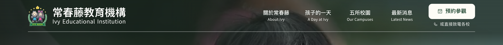
接住「先打電話問」的家長，不用先捲到頁尾找號碼
兩層結構讓這一區自成一組，不再混進導覽
頁首多一層資訊，手機放不下（已設為隱藏）
致電那行目前連到五校頁，要接真電話得依頁面帶入校區
往下捲 40px，整條頁首就讓位給深綠膠囊，預約鈕是暖黃的——這是既有設計，?book= 只換掉圖示。所以「首屏該長什麼樣」等於在選：要不要和這顆黃鈕接上。
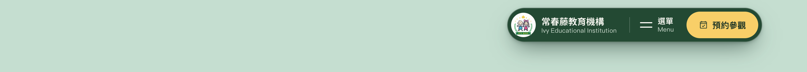
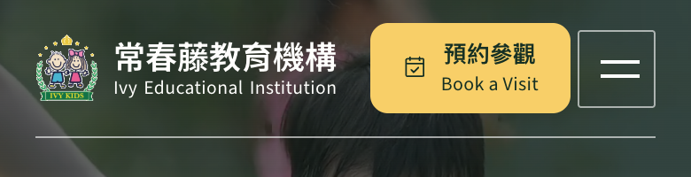
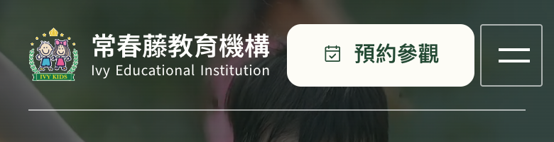
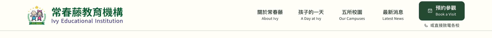
金色滿高色塊定案之後，剩下的題目是形狀。但在圓角半徑之前，有一個更大的選擇先決定其他一切：色塊要貼內容欄右緣，還是貼視窗右緣。
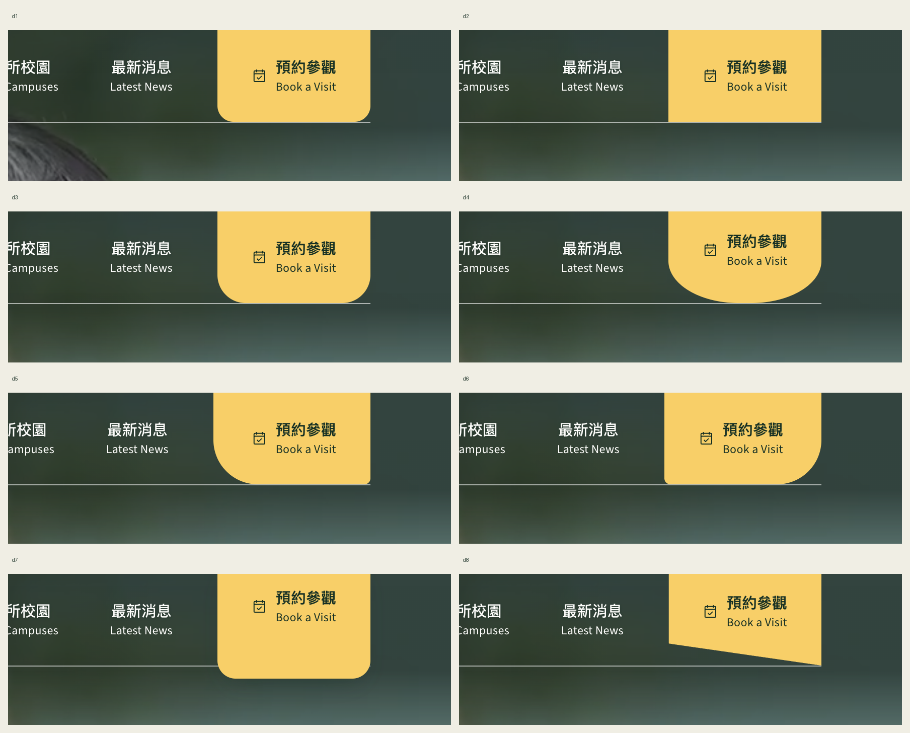
色塊右緣停在 .container 的 gutter（和膠囊、原本的預約鈕同一條線），右邊留一段底圖，看起來是「浮在頁首上的一張卡」。d2 的全直角在這個前提下最不合理——沒有貼到邊的直角像被裁掉。d4 半圓底最有記憶點但吃掉可點面積，d8 斜切和整站的圓潤語彙不同調。
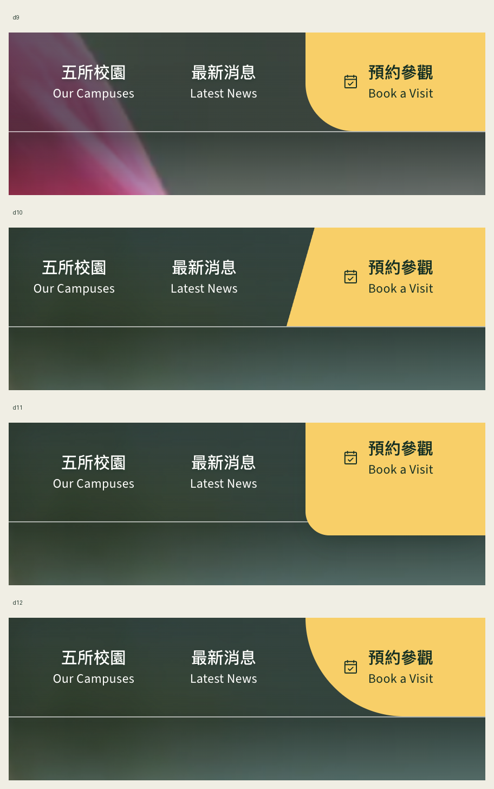
色塊滿出到視窗右緣，成為頁首結構的一部分而不是放在上面的東西。右緣一旦貼邊，右下角就不該再有圓角，形狀的自由度只剩左邊與下緣：d9 左下 44px、d12 左下 96px 的長弧、d10 左緣斜切、d11 垂過底線的吊牌。代價是頁首那條底線跟著拉成滿版。
比稿期間用的工具：左下／右下圓角、垂出底線、左右內距五個滑桿即時改 iframe 裡真正的首頁，同步吐出可貼回 studio.css 的片段。已隨定案移除（連同 ?book=dx），保留截圖為紀錄。
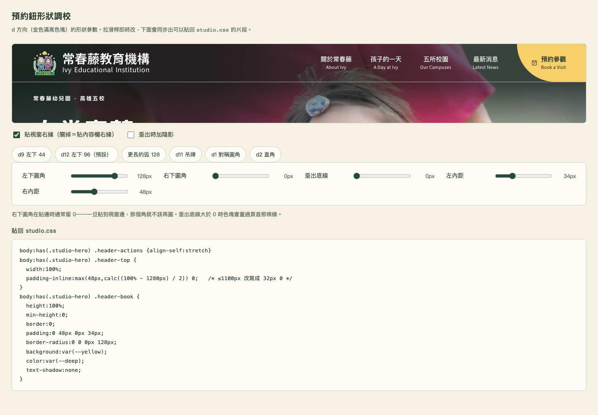
貼視窗右緣、左下一道 44px 的弧。桌機 901px 以上 .header-top 從置中容器改成滿版、左邊補回 gutter，色塊才貼得到邊；900px 以下右邊還有漢堡，退回金色膠囊。
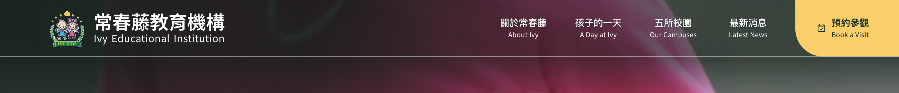
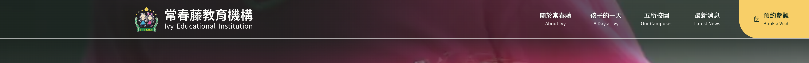
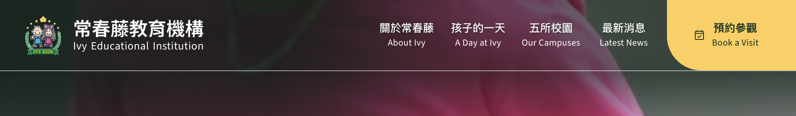
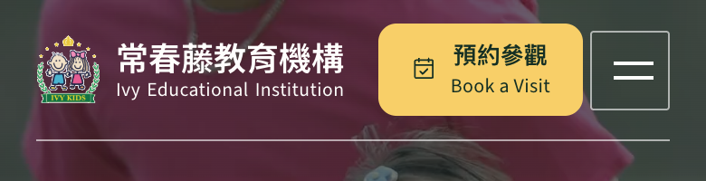
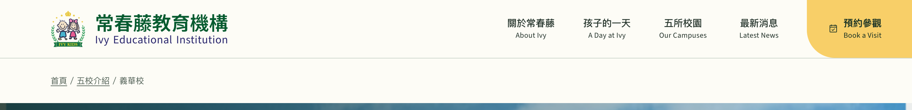
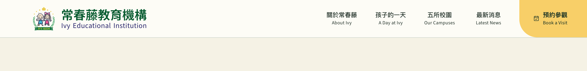
同日追加：分校頁與預約頁也換成同一顆（規則從首頁專用區段移到共用區），全站頁首現在只有一種預約鈕。
還沒決定的一件事：人在預約頁時這顆指向原地。已經補上 aria-current="page"，但視覺沒降級——它在那一頁仍是最強的元素。要不要在該頁換成低調樣式，是下一個題目。